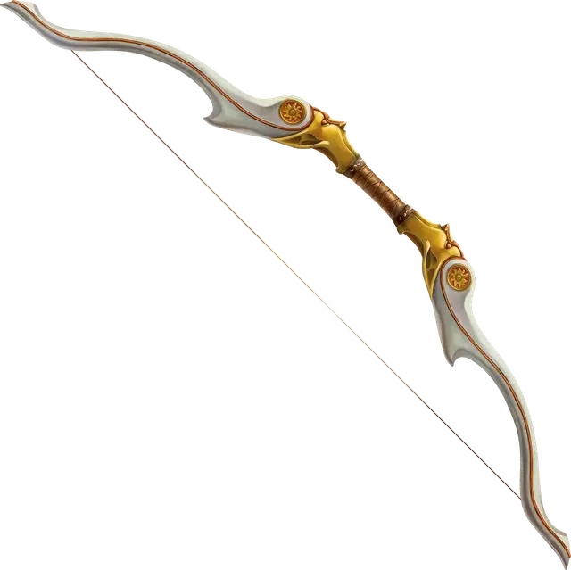

Лук клятвы
Oathbow
Оружие (Длинный лук или Короткий лук), очень редкое (требуется настройка)

Рекомендованная стоимость 40 000 ЗМ
Когда вы накладываете стрелу на этот лук, он шепчет на эльфийском: «Быстрая гибель моим врагам». Когда вы используете это оружие для совершения дальнобойной атаки, вы можете произнести или показать знаком следующие слова: «Быстрая смерть тому, кто причинил мне зло». Цель этой атаки становится вашим заклятым врагом до тех пор, пока не погибнет или до рассвета через 7 дней. У вас может быть только один такой заклятый враг одновременно. Когда ваш заклятый враг погибает, вы можете выбрать нового после следующего рассвета.
Вы совершаете с Преимуществом броски дальнобойной атаки этим оружием по вашему заклятому врагу. Кроме того, ваша цель не получает преимущества от Укрытия наполовину и Укрытия на три четверти, а вы не получаете Помеху, если цель находится в пределах максимальной дистанции. Если атака попадает, ваш заклятый враг получает 3к6 дополнительного Колющего урона.
Пока ваш заклятый враг жив, вы совершаете с Помехой броски атаки любым другим оружием.